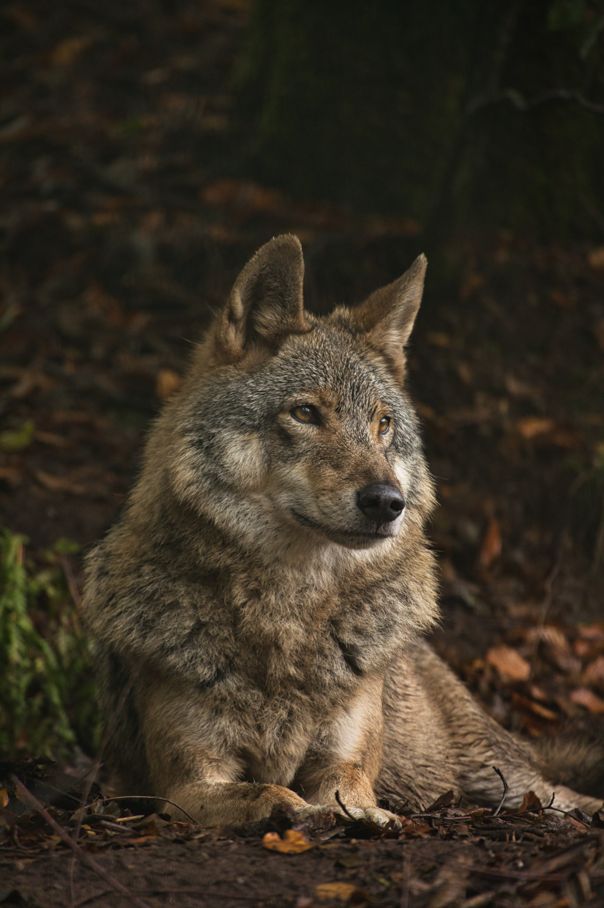

clip-path
circle()
Circle: 35%
Clips/crops the image into a circle shape with a hard border. 100% shows
the
whole image as it is, 0% makes it such a small circle, it is non-existent.
clip-path
ellipse()
clip-path: ellipse(40% 25% at center);
Clips/crops the image into an ellipse shape
with a hard border. ellipse( radius-x%
radius-y%
at (position) )
clip-path
inset()
clip-path: inset(8% round 1.5rem);
Inset if useful for cropping edges off an image or
creating a round rectangle that differs from border-radius (clipped content is truly
invisible, not just hidden behind rounded corners).
clip-path
polygon()
clip-path: inset(8% round 1.5rem);
Polygon is the most flexible because you define
each vertex as an x/y percentage or length, letting you create triangles, hexagons, arrows,
diagonal slices, or any other straight-edged shape.
clip-path
clip-path
This can be used to animate, along as the polygon shape has the same number of vertices (points)
from start to finish.
mask-image
linear mask-image
-webkit-mask-image: linear-gradient(to bottom, black 50%, transparent 100%);
mask-image: linear-gradient(to bottom, black 50%, transparent 100%);
This uses
mask-image linearly.
mask-image
vignette mask-image
-webkit-mask-image: linear-gradient(to bottom, black 50%, transparent 100%);
mask-image: linear-gradient(to bottom, black 50%, transparent 100%);
This uses
mask-image linearly.
mask-image
mask-size and mask-repeat gotcha
If your mask is smaller than the element, it repeats and creates an unexpected pattern.